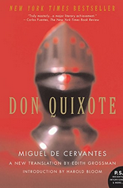

Alonso Quixano, a retired country gentleman in his fifties, lives in an unnamed section of La Mancha with his niece and a housekeeper. He has become obsessed with books of chivalry, and believes their every word to be true, despite the fact that many of the events in them are clearly impossible. Quixano eventually appears to other people to have lost his mind from little sleep and food and because of so much reading.
